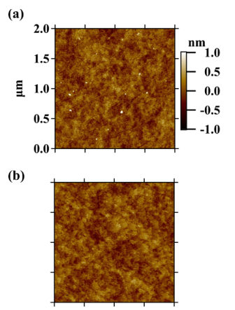
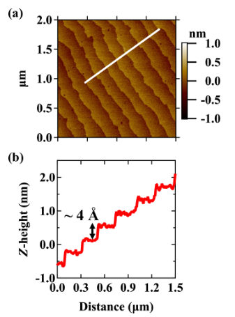
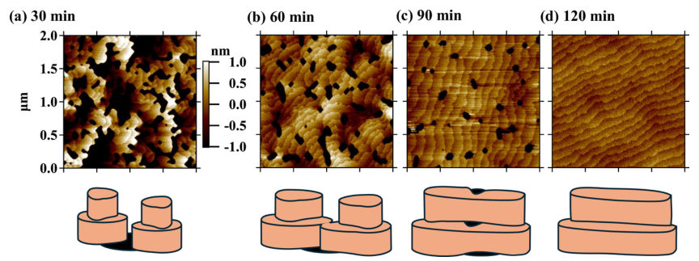
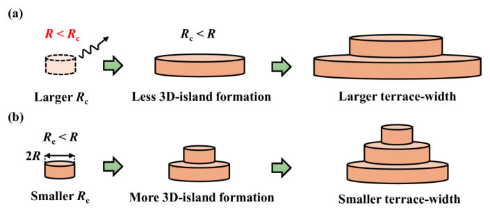
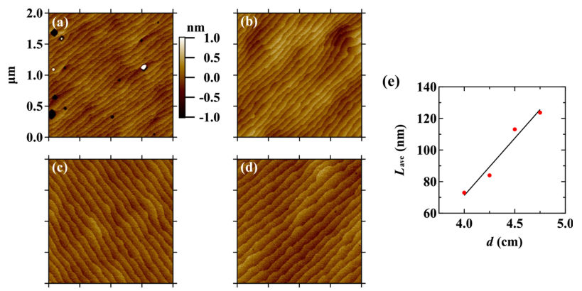
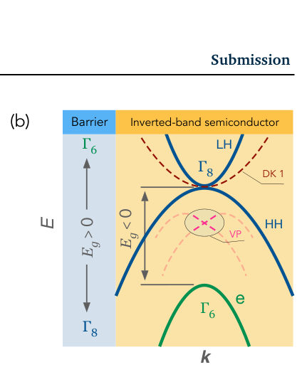
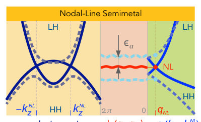
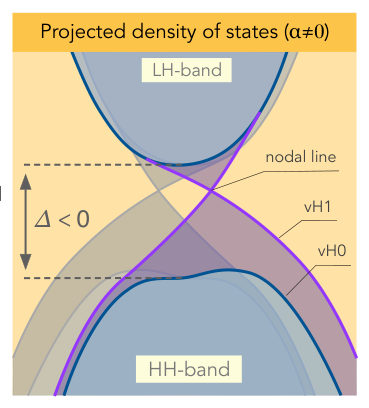
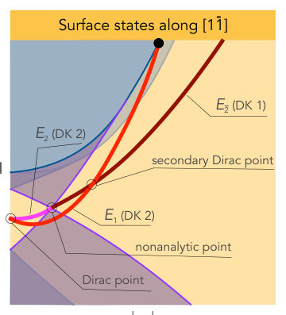

Authors: Ryotaro Arakawa, Sachio Komori, Kotaro Tomita, Shunsei Komori, Masaaki A. Tanaka, Tomoyasu Taniyama
Type: experiment · Category: other · PDF: https://arxiv.org/pdf/2605.23450v1
Analysis basis: full PDF text, analyzed in chunks





Summary. This paper demonstrates that SrRuO3 thin films can spontaneously form well-defined step-terrace structures when grown on untreated SrTiO3 substrates. By controlling growth parameters like temperature and distance, researchers can tune the surface morphology, which significantly improves the crystalline quality of subsequent layers like BiFeO3.
Why it may be interesting. not directly relevant
Main problem. Understanding the mechanism behind the self-organized formation of step-terrace structures in SrRuO3 thin films grown on mixed-terminated SrTiO3 substrates and how to tune this morphology.
Main result. The study identifies a thickness-driven growth-mode transition from 3D island growth to step-flow growth, where the terrace width can be systematically tuned via substrate temperature and target-substrate distance.
Method. Pulsed Laser Deposition (PLD) was used for film growth, with surface morphology characterized by Atomic Force Microscopy (AFM), crystal structure analyzed via X-ray Diffraction (XRD) Reciprocal Space Mapping, and ferroelectric domains observed via Piezoelectric Force Microscopy (PFM).
Model / system. The experimental platform consists of SrRuO3 (SRO) thin films grown on mixed-terminated SrTiO3 (100) substrates using PLD, with subsequent layers of BiFeO3 (BFO) used to demonstrate the utility of the template.
Key observables. Average terrace width, step height, RMS roughness, crystal structure (c-axis alignment), and ferroelectric domain structure (71-degree domains).
Important parameters / regimes. Substrate temperature (700-725 C), target-substrate distance (4-4.75 cm), oxygen pressure (80-120 mTorr), and film thickness.
Assumptions / limitations. The self-organized structure is assumed to be an intrinsic feature of the growth process rather than inherited from the substrate preparation.
Figures summary. Figure 1 compares the morphology of as-received vs. annealed STO substrates; Figure 2 shows the AFM surface morphology and line profiles of SRO films.
Paper structure. The paper begins by establishing the substrate condition, describes the growth-mode transition from 3D islands to step-flow as thickness increases, details the tuning of terrace width via temperature and distance, and concludes by demonstrating improved BFO film quality on the engineered SRO template.
Surface morphology of the substrate and bottom layers plays a critical role in the epitaxial growth of oxide thin films. Here, we report on the self-organized formation of a step-terrace structure in SrRuO3 (SRO) thin films grown using pulsed laser deposition on mixed-terminated SrTiO3 (100) substrates without any prior surface treatment. Atomic force microscopy observations reveal that SRO films initially grow in a three-dimensional island mode and subsequently undergo a transition to a step-flow growth mode through island coalescence as the film thickness increases, resulting in a well-defined step-terrace morphology with a step height consistent with the SRO unit-cell parameter. The average terrace width of the self-organized structure can be systematically tuned by varying the substrate temperature and the target-substrate distance, which we attribute to changes in the critical island radius that governs the nucleation behavior. To demonstrate the utility of this self-organized morphology, we show that BiFeO3 thin films grown on SRO films with such a step-terrace structure exhibit improved surface flatness and crystalline quality compared to those grown directly on bare SrTiO3 substrates. These findings provide a clear understanding of the mechanism of thickness-driven growth-mode transitions in perovskite oxide thin films under various growth conditions.
Authors: Vitaly N. Golovach, Alexander Khaetskii
Type: theory · Category: other · PDF: https://arxiv.org/pdf/2605.23000v1
Analysis basis: full PDF text, analyzed in chunks




Summary. This paper provides a unified theoretical description of how surface states evolve through various topological phases in strained semiconductors. It specifically highlights how the bulk nodal line creates a unique non-analytic signature in the surface-state dispersion and spin texture.
Why it may be interesting. not directly relevant
Main problem. The study investigates the evolution of surface states and their non-analytic properties across topological phase boundaries in strained, spin-orbit coupled semiconductors.
Main result. The authors demonstrate a unified picture of surface state evolution from 3D topological insulators to Weyl semimetals and reveal a topologically enforced non-analyticity (a 'kink' in dispersion) at the projected nodal line.
Method. The work uses an analytical approach based on a minimalistic Luttinger Hamiltonian model, incorporating strain via the Bir-Pikus Hamiltonian and spin-orbit coupling via Dresselhaus terms.
Model / system. The physical system consists of inverted-band-gap semiconductors like HgTe or alpha-Sn under strain, modeled using an extended Luttinger Hamiltonian that includes strain and bulk inversion asymmetry (BIA) terms.
Key observables. Surface-state energy dispersion, spin textures in momentum space, projected density of states (PDOS), and van Hove singularities.
Important parameters / regimes. Strain magnitude (tensile vs. compressive), spin-orbit coupling strength, Luttinger parameters, and the hierarchy of energy scales (e.g., 10 meV for Dirac physics vs. 3 microeV for Weyl physics).
Assumptions / limitations. The analysis utilizes the spherical approximation (gamma3 = gamma2) for certain calculations and assumes the preservation of pseudospin orthogonality via time-reversal symmetry.
Figures summary. Figure 1 shows the interface geometry and energy diagrams of the inverted band structure; Figure 4 illustrates surface-state dispersion branches and the emergence of secondary Dirac points along high-symmetry directions.
Paper structure. The paper introduces the topological phase diagram under strain, develops the mathematical framework using the Luttinger Hamiltonian, derives analytical solutions for surface states, and analyzes the resulting non-analyticities and density of states.
This work explores the topological phase diagram of inverted-band-gap semiconductors under strain and spin-orbit coupling. Using a minimalistic Luttinger Hamiltonian model, we follow the transitions between a 3D topological insulator, a Dirac semimetal, a nodal-line semimetal, and a Weyl semimetal. Analytical and exact solutions for surface states are derived for high-symmetry directions as well as in several limiting cases. We demonstrate the continuous evolution of these surface states across phase boundaries, providing a unified picture that synthesizes previous literature. Specifically, we detail the progression from a Dirac to a nodal-line and then to a Weyl semimetal as spin-orbit coupling originating from bulk inversion asymmetry is introduced. A hierarchy of energy scales is established, defining the criteria for realizing these phases. Finally, we reveal a non-analyticity in the surface-state dispersion at the projected nodal line, originating from distinct, terminating patches of surface states with unique spin textures in momentum space.